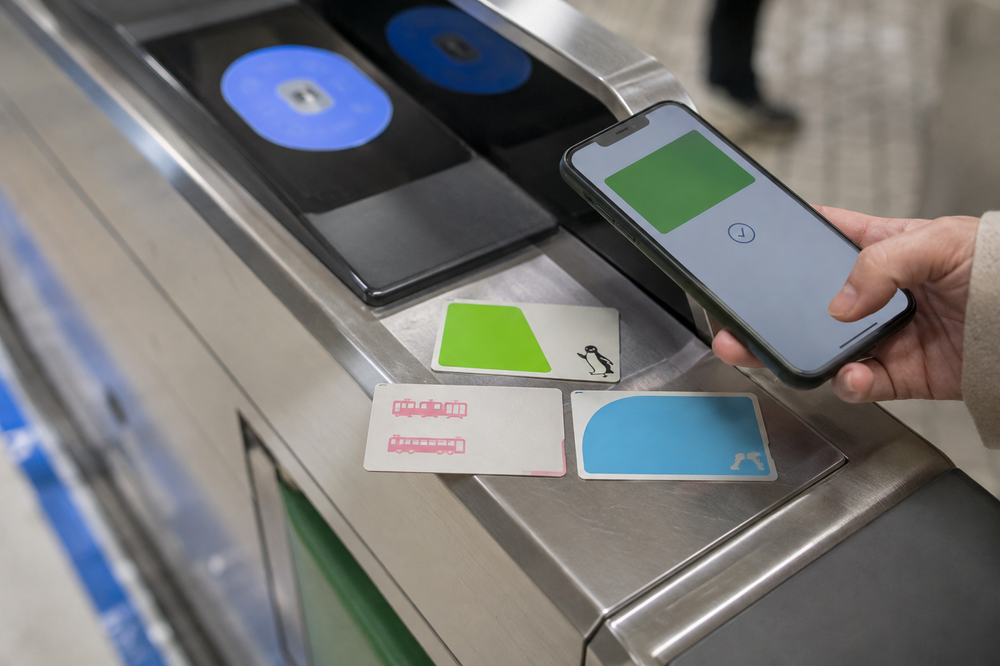
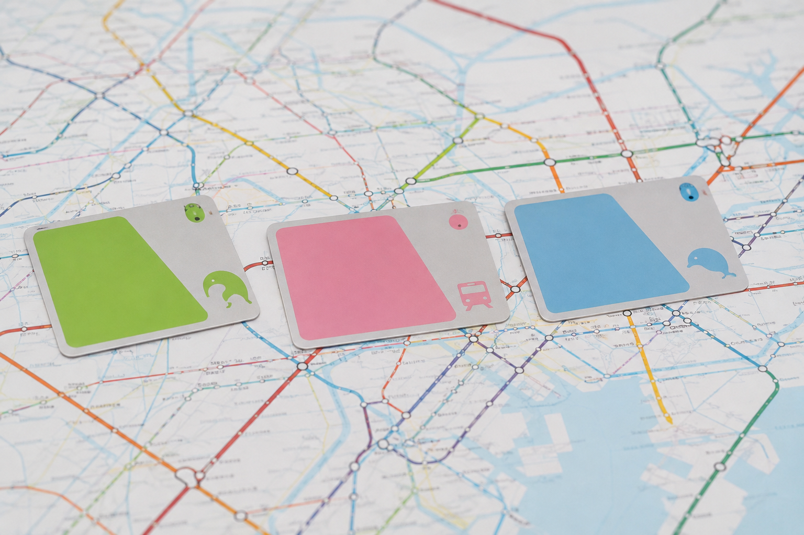
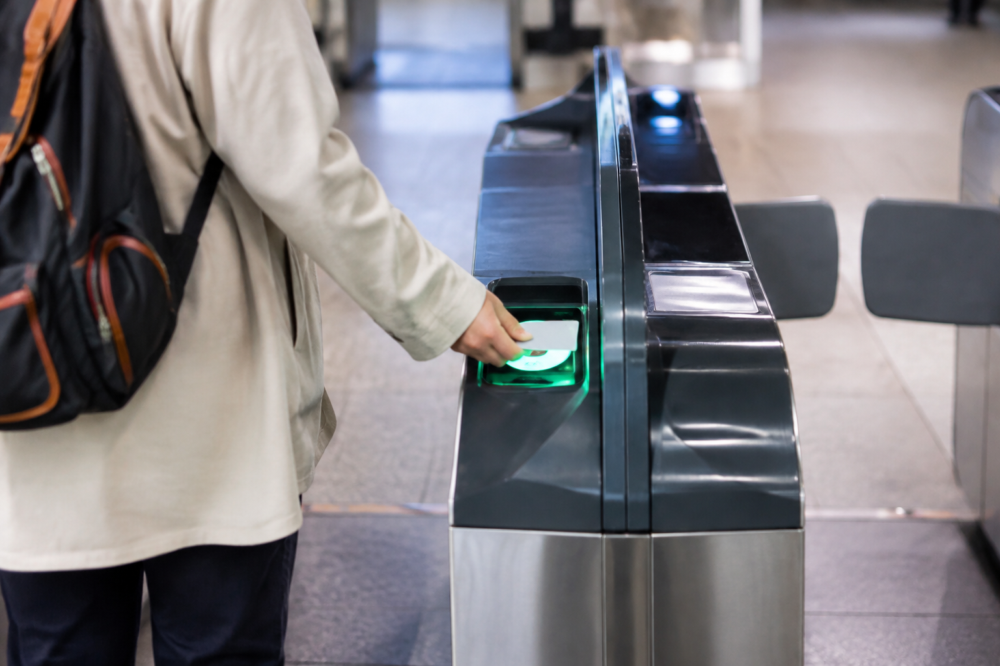

IC Cards in Japan: Suica, PASMO and ICOCA Explained
An IC card is one of the easiest ways to pay for everyday transportation in Japan. Instead of buying a paper ticket every time you take a local train, subway, or participating bus, you load money onto the card and tap it at the ticket gate.
The three names first-time visitors see most often are Suica, PASMO, and ICOCA. The good news is that you usually do not need to worry about choosing the “best” one. Japan's major transport IC cards are widely interoperable, so a Suica bought around Tokyo can be used on many compatible trains and buses in Osaka, while an ICOCA bought in western Japan can be used on many compatible networks in Tokyo.
For most travelers, the best choice is simply the compatible IC card that is easiest to get when you arrive. This guide explains the differences between Suica, PASMO, ICOCA, Welcome Suica, TOURIST PASMO, and mobile versions, plus where they work, how to recharge them, and what they cannot replace.
IC Cards in Japan at a Glance

| Card | Main Issuing Area | Best For | Tourist Version |
|---|---|---|---|
| Suica | Tokyo / JR East | Tokyo arrivals and nationwide compatible use | Welcome Suica |
| PASMO | Tokyo / private railways | Tokyo arrivals and nationwide compatible use | TOURIST PASMO |
| ICOCA | Osaka, Kyoto / JR West | Kansai arrivals and nationwide compatible use | Standard ICOCA commonly works well |
| Welcome Suica | JR East | Short-term international visitors | 28-day validity |
| TOURIST PASMO | Tokyo airports | Short-term international visitors | 28-day validity |
For a normal first trip, the differences are much smaller than the names suggest.
What Is an IC Card?
An IC card is a rechargeable stored-value card.
You add money to it and use that balance for compatible payments.
For transportation, the basic process is:
Tap when entering → travel → tap when leaving
The system calculates the applicable fare and deducts it from your balance.
That means you usually do not need to:
- ✓Work out a local fare in advance
- ✓Buy a paper ticket for every ride
- ✓Carry exact change for every train
- ✓Learn every transport company's ticket machine
This is why I recommend having an IC card for most first-time Japan trips.
What Can You Use an IC Card for?
Depending on the location and operator, major IC cards can be used for:
- ✓Local trains
- ✓Subways
- ✓Buses
- ✓Some trams
- ✓Some taxis
- ✓Convenience stores
- ✓Vending machines
- ✓Station lockers
- ✓Shops
- ✓Restaurants and cafes that display the IC payment logo
Look for the compatible transport IC-card symbol.
If the card is accepted, you can usually tap instead of paying cash.
Is an IC Card a Rail Pass?
No.
This distinction is important.
An IC card is mainly a payment method.
It does not normally give you unlimited transportation.
If a train ride costs ¥220, approximately ¥220 is deducted from your stored balance.
If another ride costs ¥480, that fare is deducted too.
The Japan Rail Pass, on the other hand, covers eligible JR travel during a fixed validity period.
They solve completely different problems.
Does an IC Card Save Money?
Usually, its main benefit is convenience rather than major discounts.
Do not buy a Suica or ICOCA because you expect every train ride to become much cheaper.
Buy one because it reduces the need to purchase individual local tickets.
Over a busy sightseeing day, that convenience adds up.
Suica vs PASMO vs ICOCA: Which Is Best?

For most first-time travelers:
Whichever one is easiest to get is usually best.
If you arrive in Tokyo, Suica or PASMO makes sense.
If you arrive in Osaka or another JR West area, ICOCA makes sense.
You generally do not need:
Suica + PASMO + ICOCA
for the same trip.
One compatible card can handle a large amount of your everyday transport.
Can Suica Be Used in Osaka and Kyoto?
Yes, on compatible networks.
A Suica issued in the Tokyo area can be used on many IC-compatible trains, buses, and payment systems in Kansai.
That includes many journeys around:
- ✓Osaka
- ✓Kyoto
- ✓Kobe
- ✓Nara
You do not need to buy ICOCA just because you arrive in Osaka after using Suica in Tokyo.
Can ICOCA Be Used in Tokyo?
Yes, on compatible networks.
ICOCA participates in Japan's nationwide IC-card interoperability system.
A traveler who starts in Osaka can continue using the same ICOCA on many compatible:
- ✓JR trains
- ✓Tokyo subways
- ✓Private railways
- ✓Buses
when reaching Tokyo.
Can PASMO Be Used Outside Tokyo?
Yes.
PASMO also participates in nationwide mutual use with other major compatible transport IC cards.
This means you do not need to replace PASMO when moving from Tokyo to Kyoto or Osaka.
The Main Nationwide Compatible IC Cards
Japan's major interoperable cards include:
- ✓Suica
- ✓PASMO
- ✓ICOCA
- ✓Kitaca
- ✓TOICA
- ✓manaca
- ✓SUGOCA
- ✓nimoca
- ✓Hayakaken
- ✓PiTaPa
Most first-time international visitors will mainly encounter Suica, PASMO, or ICOCA.
You do not need to memorize the entire list.
Nationwide Does Not Mean Literally Everywhere
This is one limitation travelers need to understand.
Your Suica may work across many cities, but that does not mean you can tap it on every railway, every bus, and every rural route in Japan.
Some:
- ✓Rural railways
- ✓Local buses
- ✓Small transport operators
- ✓Remote stations
may not accept the nationwide IC system.
Always check when traveling outside major tourist areas.
Another Important Limitation: IC Areas
Even where the same IC card works in different regions, you cannot always start a normal IC-card rail journey in one IC area and simply travel across several separate coverage areas before tapping out.
Long intercity journeys may require a normal train ticket instead.
Think of an IC card mainly as your tool for local and regional everyday travel, not a replacement for every long-distance train ticket in Japan.
What Is Suica?
Suica is issued by JR East.
It is one of the most recognized IC cards among international travelers.
It is especially useful if your trip begins around:
- ✓Tokyo
- ✓Narita
- ✓Haneda
- ✓Other JR East areas
Once loaded with money, it can be used across many participating networks around Japan.
Regular Suica
A regular physical Suica works as a reusable transportation and electronic-money card.
Unlike short-term tourist cards, a standard card is designed for continued use.
For a visitor who expects to return to Japan, a normal reusable card can be more attractive than a tourist card if it is convenient to obtain.
What Is Welcome Suica?
Welcome Suica is a special JR East product aimed at international visitors.
The physical Welcome Suica card is currently valid for 28 days including the purchase date.
It does not require the normal reusable-card deposit.
However, there is a major trade-off:
Unused stored value is not refunded.
So do not load a large amount onto it near the end of your trip.
Where Can You Buy Welcome Suica?
Current sales locations include selected JR East locations such as:
- ✓Narita Airport
- ✓Haneda Airport Terminal 3
- ✓Tokyo Station
- ✓Shibuya
- ✓Shinjuku
- ✓Ikebukuro
- ✓Ueno
- ✓Yokohama
- ✓Sendai
Availability and exact sales points can change.
If you plan to buy one at arrival, check the current JR East location list before your flight.
Welcome Suica Reference Paper
When buying a physical Welcome Suica, keep the reference paper that comes with it.
It shows information such as:
- ✓Card validity period
- ✓Charged balance at purchase
- ✓Any associated pass details
The validity period is not simply printed as a normal expiration date on the card.
Keep the reference information during your trip.
What Happens After 28 Days?
A short-term physical Welcome Suica becomes invalid after its 28-day validity period.
Any remaining balance is not refunded.
That is why I would recharge gradually rather than putting a very large amount on the card at the start.
What Is PASMO?
PASMO is another major Tokyo-area IC card.
It is associated mainly with participating private railway, subway, and bus operators rather than JR East.
For a tourist, however, the practical difference between regular PASMO and Suica is often very small.
Both can handle many of the same everyday journeys through nationwide interoperability.
Suica or PASMO in Tokyo?
Either is fine for most tourists.
Do not spend an hour searching for Suica if a compatible PASMO is easily available beside you.
And do not travel across Tokyo looking for PASMO if you already have Suica.
The card brand matters much less than:
- ✓Compatibility
- ✓Availability
- ✓Whether it suits the length of your stay
What Is TOURIST PASMO?
In May 2026, PASMO introduced a new TOURIST PASMO specifically for international visitors.
This is different from the older PASMO PASSPORT product that ended previously.
TOURIST PASMO:
- ✓Is intended for short-term international visitors
- ✓Has no card service charge
- ✓Is valid for 28 days from purchase
- ✓Can be used on compatible transport
- ✓Can be used for participating cashless purchases
- ✓Can be recharged
- ✓Does not refund remaining stored value
This makes it a direct tourist-friendly alternative to Welcome Suica for many Tokyo arrivals.
Where Is TOURIST PASMO Sold?
As of 2026, sales are focused on international airport arrival points.
It is currently available through selected railway facilities at:
Haneda Airport
Participating Keikyu sales points and traveler ticket machines.
Narita Airport
Selected Keisei information centers.
This makes it especially useful if you want an IC card immediately after landing in Tokyo.
How Much Does TOURIST PASMO Cost?
The available initial purchase amounts vary by sales location.
Current options can range from ¥1,000 up to ¥10,000 at some Haneda Airport machines, while some Narita sales points offer specific starting amounts.
There is no normal ¥500 reusable-card deposit.
Welcome Suica vs TOURIST PASMO
For most short-term visitors, the practical difference is small.
| Feature | Welcome Suica | TOURIST PASMO |
|---|---|---|
| Designed for tourists | Yes | Yes |
| Physical card validity | 28 days | 28 days |
| Normal ¥500 deposit | No | No |
| Remaining balance refund | No | No |
| Tokyo transport | Yes | Yes |
| Compatible nationwide use | Yes | Yes |
| Shopping payments | Yes | Yes |
| Main Tokyo airport availability | Yes | Yes |
If both are available, I would choose whichever is easier to purchase for your arrival route.
There is little reason for a normal tourist to own both.
What Is ICOCA?
ICOCA is issued by JR West.
It is especially common in western Japan and the Kansai region.
If your trip starts around:
- ✓Osaka
- ✓Kyoto
- ✓Kobe
- ✓Hiroshima
- ✓Other JR West areas
ICOCA may be the easiest physical IC card to obtain.
It can also be used across many compatible networks elsewhere in Japan.
How Much Does a Standard ICOCA Cost?
A standard physical ICOCA is commonly sold for ¥2,000, which includes:
¥500 deposit
plus
¥1,500 usable stored value
Some machines may offer different initial amounts, but the ¥500 deposit remains separate from the money available for fares and purchases.
Can You Refund ICOCA?
Unlike the short-term Welcome Suica and TOURIST PASMO products, a standard physical ICOCA can be returned under the applicable refund rules.
The ¥500 deposit can be returned.
A refund handling fee may apply to remaining stored value.
This means a regular ICOCA works differently from the tourist cards.
Which Card Should You Get Based on Arrival Airport?
Arriving at Haneda
Start with whichever convenient compatible Tokyo card is currently available, such as:
- ✓Welcome Suica
- ✓TOURIST PASMO
- ✓A suitable regular Suica/PASMO option
Arriving at Narita
The same general rule applies.
Welcome Suica and TOURIST PASMO both have airport purchase options.
Arriving at Kansai International Airport
ICOCA is a natural starting choice.
Arriving Somewhere Else
Buy the major compatible IC card available in that region.
You usually do not need to search specifically for Suica.
My Recommendation for Most First-Time Visitors
Keep the decision simple.
Starting in Tokyo for under 28 days:
Welcome Suica or TOURIST PASMO can both work well.
Starting in Kansai:
ICOCA is usually an easy choice.
Already have one compatible IC card:
Keep using it.
Do not collect multiple cards unless there is a specific reason.
The important question is not:
“Which card has the best brand?”
It is:
“Can this one card handle the local transport on my itinerary?”
For most Tokyo-Kyoto-Osaka first trips, the answer is yes.
How to Use an IC Card at Train Gates

For a normal local train journey, using an IC card is simple.
Entering the Station
- ✓Find the correct ticket gate.
- ✓Touch your IC card to the reader.
- ✓Wait for the gate to open.
- ✓Check the balance shown on the screen if needed.
- ✓Keep the same card for the whole journey.
Leaving the Station
Touch the same card to the reader at the exit gate.
The system calculates the applicable fare and deducts it from your stored balance.
You usually do not need to know the exact fare before traveling.
Always Use the Same Card to Enter and Exit
Do not enter with Suica and try to leave using another IC card.
The system needs the entry information stored on the original card to calculate the trip correctly.
The same rule applies if you use a mobile IC card.
Use the same:
- ✓Physical card
- ✓iPhone
- ✓Apple Watch
for both ends of the journey.
What Happens If Your Balance Is Too Low?
If there is not enough money on the card when you try to leave, the gate may not let you through.
This is easy to fix.
Look for:
- ✓Fare adjustment machine
- ✓Recharge machine
- ✓Station staff
Add enough money to cover the journey, then try the exit gate again.
You do not need to buy another train ticket.
How to Recharge a Physical IC Card
Physical cards can usually be recharged at compatible:
- ✓Ticket machines
- ✓Fare adjustment machines
- ✓Convenience stores
- ✓Some station counters
- ✓Some ATMs
- ✓Buses where supported
Look for the IC-card recharge or charge option.
Recharging at a Station Machine
A normal process is:
- ✓Select the IC-card recharge option.
- ✓Insert or place the card as instructed.
- ✓Choose the amount.
- ✓Insert cash.
- ✓Complete the transaction.
- ✓Take the card and any change.
English menus are available on many machines used by international visitors.
Do You Need Cash to Recharge a Physical Card?
Cash remains one of the safest options for recharging physical IC cards.
Some machines or services may offer other payment methods, but I would not assume your foreign credit card will work at every recharge machine.
Keeping some yen available is useful even if you normally pay by card.
How Much Can You Store on an IC Card?
For major cards such as PASMO, the stored-value balance is generally capped at ¥20,000.
You do not need anywhere near that amount for most everyday use.
For a first trip, I would recharge in smaller amounts and add more when needed.
This is especially important with:
- ✓Welcome Suica
- ✓TOURIST PASMO
because their remaining balances are not refundable after the tourist card expires.
How Much Should You Load at First?
There is no perfect amount.
For most first-time visitors, I prefer starting with a moderate balance rather than loading the maximum.
For example, enough for:
- ✓Airport connection if compatible
- ✓Several city journeys
- ✓Small purchases
Then recharge as needed.
If you are using a 28-day tourist card, this reduces the risk of leaving Japan with a large unused balance.
Check Your Balance Before a Busy Travel Day
You do not need to check after every ride.
But it is useful before:
- ✓A full sightseeing day
- ✓Airport travel
- ✓A day with several train journeys
- ✓Leaving a major city for a smaller area
A little planning prevents you from reaching a station with a very low balance when you are in a hurry.
Can You Recharge at Convenience Stores?
Many convenience stores that accept transport IC payments can also recharge compatible physical cards.
Tell the staff you want to charge the card and state the amount.
Cash is commonly used for this type of recharge.
This can be useful when you do not want to find a station ticket machine.
Can You Recharge on a Bus?
Some buses allow IC-card recharging.
For example, current TOURIST PASMO guidance allows onboard top-ups on compatible buses in ¥1,000 increments using ¥1,000 notes, subject to applicable limits.
However, bus procedures vary.
I would prefer recharging before boarding when possible rather than depending on the bus driver.
Can You Use Suica, PASMO or ICOCA on an iPhone?
Yes.
Apple Wallet currently supports adding compatible Japanese transit cards including:
- ✓Suica
- ✓PASMO
- ✓ICOCA
- ✓TOICA
on supported iPhone and Apple Watch models.
For many travelers, this removes the need to carry a physical IC card.
Why Mobile IC Cards Can Be Easier
A mobile card can let you:
- ✓Add money through your phone
- ✓Check your balance instantly
- ✓See recent transactions
- ✓Tap your phone at ticket gates
- ✓Pay at compatible shops
- ✓Avoid carrying another physical card
If your phone and payment setup are compatible, this can be one of the easiest ways to handle local Japan transportation.
How to Add an IC Card to Apple Wallet
On a compatible iPhone:
- ✓Open Wallet.
- ✓Tap the + button.
- ✓Choose Transit Card.
- ✓Select Suica, PASMO, ICOCA, or another supported card.
- ✓Choose an initial balance.
- ✓Complete the payment steps.
- ✓Add the card to Wallet.
Your exact options depend on your device and account setup.
What Is Express Mode?
When a compatible Japanese transit card is set to Express Mode, you can use it at ticket gates without:
- ✓Opening Wallet
- ✓Unlocking the phone
- ✓Using Face ID for every ride
Simply hold the iPhone or Apple Watch near the reader.
This makes mobile IC use feel very similar to tapping a physical card.
Do You Need Internet to Tap a Mobile IC Card?
For normal supported transit use, your device does not need an active Wi-Fi or mobile-data connection every time you tap at a gate.
That is useful underground or in stations where your signal is weak.
You may still need internet access for tasks such as:
- ✓Setting up cards
- ✓Adding money through online payment
- ✓Account changes
Can You Recharge a Mobile IC Card With a Credit Card?
On compatible Apple Wallet setups, you can add money using an eligible payment card stored in Wallet.
For example, PASMO currently allows Apple Wallet top-ups and supports a stored-value balance of up to ¥20,000.
However, foreign payment-card compatibility can vary.
Do not assume every overseas credit or debit card will work perfectly.
If mobile recharge fails, a physical IC card with cash recharge may be the easier backup.
Mobile IC Card Services Can Have Maintenance Windows
Some mobile functions can become unavailable during scheduled overnight maintenance.
This may affect:
- ✓Creating a new mobile card
- ✓Adding money by payment card
- ✓Moving cards between devices
- ✓Other account functions
Normal transport use may still work during some maintenance periods.
If you have an early train, I would not leave an essential recharge until the middle of the night.
What If You Transfer a Physical Card to Apple Wallet?
Compatible physical Suica, PASMO, or ICOCA cards may be transferred to a supported iPhone or Apple Watch.
When a supported physical card is transferred:
- ✓The stored balance moves to the mobile card
- ✓Eligible card information moves to Wallet
- ✓The old physical card stops working
Do not transfer a physical card if you still expect another traveler to use that plastic card.
One card belongs to one active device after transfer.
Can the Same Mobile Card Be on an iPhone and Apple Watch?
Not at the same time.
A transit card can be active on one device at a time.
You can move it between compatible devices, but choose which device you actually want to tap at train gates.
If you normally wear an Apple Watch, putting the transit card there can make everyday travel very quick.
Physical Card or Mobile Card: Which Is Better?
Both work.
Choose a Physical Card If:
- ✓You prefer simple cash top-ups
- ✓Your phone is not compatible
- ✓Your foreign payment card has mobile-wallet problems
- ✓You do not want transportation tied to your phone battery
- ✓You prefer carrying a separate card
Choose a Mobile Card If:
- ✓You use a compatible iPhone or Apple Watch
- ✓Wallet setup works with your payment method
- ✓You want easy balance checks
- ✓You want phone-based recharging
- ✓You prefer carrying fewer cards
I would not say mobile is automatically better.
Choose the option that will be most reliable for you.
What About Android Phones?
Mobile IC-card support depends more heavily on the specific Android device and its compatibility with Japan's contactless transport system.
Do not assume that an Android phone bought outside Japan will support mobile Suica, PASMO, or ICOCA simply because it has NFC.
Check your exact:
- ✓Phone model
- ✓Operating system
- ✓Wallet support
- ✓Card provider requirements
before relying on mobile IC travel.
If there is any doubt, buy a physical card.
What If Your Phone Battery Dies?
A physical card obviously avoids this concern.
Some compatible Apple devices may retain limited Express Card functionality after the main battery becomes very low, but you should not build your transport plan around emergency battery behavior.
Keep your phone charged.
A small power bank is useful for long sightseeing days because your phone may also be handling:
- ✓Maps
- ✓Translation
- ✓Photos
- ✓Train routes
- ✓Hotel bookings
Can Children Use IC Cards?
Yes, but child fares require the correct child IC-card setup.
Do not simply hand a child a normal adult anonymous card and expect child fares to be calculated automatically.
A child card normally requires age verification and is issued under the applicable railway rules.
If traveling with children, arrange the correct card at an eligible station or service point.
Does Every Traveler Need Their Own IC Card?
Yes, for train travel.
You generally cannot tap one card several times at the same gate to pay for an entire group.
Each traveler needs their own:
- ✓IC card
- ✓Valid ticket
- ✓Other accepted fare product
This includes children who require their own applicable fare.
Using an IC Card on Buses
Bus procedures vary by city and operator.
On compatible buses, you may:
- ✓Tap when boarding
- ✓Tap when leaving
- ✓Tap only once
depending on how fares are calculated.
Follow:
- ✓Signs
- ✓Onboard instructions
- ✓What local passengers do
Do not assume every bus works exactly like the Tokyo train gates.
Using IC Cards in Convenience Stores
IC cards are useful beyond transport.
At participating convenience stores, tell the cashier you want to pay with your transport IC card, then tap the card or device on the reader.
This can be convenient for:
- ✓Drinks
- ✓Snacks
- ✓Small meals
- ✓Everyday purchases
It also helps use up a tourist-card balance near the end of the trip.
Using IC Cards at Vending Machines
Many vending machines display the transport IC-card payment symbol.
Select your item and tap the card as instructed.
This is another reason an IC card can reduce the amount of coins you handle during the trip.
Using IC Cards for Station Lockers
Many station lockers accept compatible IC cards.
Depending on the locker, the card may serve as:
- ✓Payment method
- ✓Locker key
- ✓Both
Follow the instructions carefully.
If your IC card becomes the locker key, remember which card you used.
Can You Use an IC Card at Restaurants?
Some restaurants and cafes accept transport IC payments.
Look for the IC-card or electronic-money logos at the register.
Acceptance is common enough to be useful but not universal.
Keep another payment option available.
What an IC Card Cannot Replace
Even if your Suica, PASMO, or ICOCA works almost every day, you may still need separate payment for:
- ✓Some Shinkansen journeys
- ✓Certain limited express tickets
- ✓Rural transport
- ✓Long journeys crossing incompatible IC areas
- ✓Some airport services
- ✓Some buses
- ✓Non-participating shops
Do not treat the IC card as a universal Japan ticket.
IC Card and Shinkansen Travel
This causes a lot of confusion.
You generally cannot approach the Shinkansen gate with an ordinary IC-card balance and expect the full long-distance fare to be deducted like a subway ride.
However, compatible services such as SmartEX can link a Shinkansen reservation to an eligible IC card.
In that case:
You book and pay for the Shinkansen first.
Then:
You use the linked IC card as the boarding credential.
The detailed process belongs in Shinkansen Guide: How to Use Japan's Bullet Trains.
IC Card and the JR Pass
You may still want an IC card even if you have a JR Pass.
The JR Pass does not cover every:
- ✓Subway
- ✓Private railway
- ✓Bus
- ✓Local operator
An IC card can handle many of those separate everyday fares.
So a traveler can carry:
JR Pass + IC card
without duplication.
They serve different purposes.
How I Would Use an IC Card on a Tokyo-Kyoto-Osaka Trip
A simple setup is:
Tokyo
Use the IC card for:
- ✓JR local trains
- ✓Metro
- ✓Private railways
- ✓Compatible buses
- ✓Small purchases
Tokyo → Kyoto
Buy the appropriate Shinkansen ticket separately.
Kyoto
Continue using the same IC card on compatible:
- ✓Trains
- ✓Subway
- ✓Buses
Kyoto → Osaka
Use the IC card if your chosen local or private railway journey supports it.
Osaka
Keep using the same card for local transport.
There is usually no need to change Suica to ICOCA simply because you reached Kansai.
The Best IC-Card Habit
Keep enough balance for the next day, but do not overcharge the card.
For a reusable standard card, unused balance is less urgent if you expect to return.
For Welcome Suica or TOURIST PASMO, be more careful because unused stored value is not refunded.
Near the end of the trip, stop adding large amounts and begin using the remaining balance for local rides and compatible small purchases.
What Happens If You Lose Your IC Card?
The answer depends on the type of card.
Welcome Suica
A lost physical Welcome Suica cannot be reissued.
Because it is a short-term tourist card, there is also no normal refund of unused stored value.
If the card itself malfunctions while still valid, JR East has a separate malfunction-refund process, but that is different from losing the card.
TOURIST PASMO
A lost TOURIST PASMO also cannot be reissued.
Any stored balance on the lost card is effectively lost.
This is another reason not to keep a very large balance on a tourist card.
Standard PASMO
A blank anonymous PASMO cannot normally be reissued if lost.
A personalized PASMO can be reissued under the applicable rules because it is linked to registered personal details.
Standard ICOCA
The rules depend on the specific card type.
For ordinary tourist use, the simplest approach is still to keep the card secure and avoid carrying a large unnecessary balance.
What If Your Card Stops Working?
Do not immediately buy a second card.
A card may fail because:
- ✓The previous journey did not process correctly
- ✓The card was not read properly at a gate
- ✓You crossed into another IC area incorrectly
- ✓The balance is too low
- ✓The physical card has malfunctioned
Go to the staffed ticket gate and show the card.
Station staff can usually tell you what happened.
What If You Forget to Tap Out?
This can leave the card with an incomplete journey.
The next time you try to use it, the gate may reject the card.
Go to station staff and explain:
- ✓Where you entered
- ✓Where you exited
- ✓What happened
They can usually correct the record and calculate the required fare.
Do not keep tapping the card repeatedly at different gates.
Can You Cross Japan With One IC Card?
You can use the same major interoperable card in many different cities, but this does not mean every long rail journey can be completed by tapping in at one end and tapping out hundreds of kilometers away.
A key limitation is traveling across separate IC-card coverage areas.
For example, an IC card may work locally in both regions but still not support one continuous rail journey that crosses from one IC area into another.
For those journeys, buy the proper long-distance ticket.
A Simple Rule for Long Journeys
Use your IC card for:
- ✓City trains
- ✓Subways
- ✓Short regional journeys
- ✓Compatible buses
- ✓Everyday local travel
Use a separate ticket or reservation for:
- ✓Shinkansen
- ✓Long intercity travel
- ✓Certain limited express services
- ✓Routes crossing incompatible IC areas
That rule covers most first-time situations.
Can You Use an IC Card From Tokyo to Kyoto?
Not as a normal stored-value local train journey.
Tokyo to Kyoto is a long-distance Shinkansen route and should be handled through the proper Shinkansen ticket or reservation system.
You may link a compatible IC card to a SmartEX reservation, but the long-distance fare is paid through the reservation, not simply deducted like a subway ride.
Can You Use an IC Card From Kyoto to Osaka?
Often, yes, if you use an eligible local or private railway within compatible IC coverage.
This is exactly the type of regional journey where an IC card can be very convenient.
Can You Use an IC Card From Kyoto to Nara?
Usually, yes on compatible railway routes.
The exact best route depends on:
- ✓Your Kyoto station
- ✓Your destination in Nara
- ✓Railway operator
But this is a typical local/regional IC-card use case.
Can You Use an IC Card From Osaka to Hiroshima?
Not as a simple normal tap journey on the Shinkansen.
Buy the appropriate long-distance ticket.
This distinction keeps your planning much easier.
IC Cards in Tokyo
Tokyo is one of the easiest places to use an IC card.
You can commonly use it across compatible:
- ✓JR local trains
- ✓Tokyo Metro
- ✓Toei Subway
- ✓Private railways
- ✓Buses
- ✓Shops
- ✓Vending machines
This is why first-time travelers starting in Tokyo usually benefit from getting one early.
IC Cards in Kyoto
Kyoto also supports major interoperable IC cards across many useful services.
You may use the same Suica, PASMO, or ICOCA for compatible:
- ✓Trains
- ✓Subway
- ✓Buses
You do not need a Kyoto-specific IC card simply because you changed cities.
IC Cards in Osaka
Osaka works the same way.
Your Tokyo-issued Suica or PASMO can continue to be useful on many compatible:
- ✓JR lines
- ✓Osaka Metro
- ✓Private railways
- ✓Other local transport
Again, you do not need to switch to ICOCA if your existing card already works.
IC Cards in Rural Japan
This is where you need more caution.
Some smaller:
- ✓Train lines
- ✓Rural stations
- ✓Buses
- ✓Local operators
may not accept major transport IC cards.
If your itinerary moves beyond major tourist cities, check the specific transport before the travel day.
Carry some cash as backup.
Should You Still Carry Cash?
Yes.
Even with an IC card and credit card, I would still carry some yen.
Cash can be useful for:
- ✓Rural buses
- ✓Smaller operators
- ✓Cash-only restaurants
- ✓Temple or shrine payments
- ✓Coin lockers
- ✓Recharging physical IC cards
- ✓Unexpected transport problems
Japan has strong cashless coverage in many tourist areas, but you should not depend on one payment method.
How Much Balance Should You Leave Before Departure?
For reusable cards, this is less urgent.
For short-term tourist cards, try to use most of the balance before leaving.
With:
- ✓Welcome Suica
- ✓TOURIST PASMO
unused stored value is generally not refunded for normal customer-requested refunds.
Near the final days, stop making large top-ups.
Use the remaining balance for:
- ✓Airport transport if compatible
- ✓Convenience stores
- ✓Drinks
- ✓Snacks
- ✓Small purchases
Welcome Suica Refunds
A normal unused balance on Welcome Suica is not refunded simply because your trip is ending.
The card expires after 28 days including the purchase date.
There is a separate process if the card itself malfunctions, but that should not be confused with a normal end-of-trip refund.
TOURIST PASMO Refunds
TOURIST PASMO also does not provide a normal unused-value refund.
It is designed as a short-term visitor card.
Once the 28-day validity period ends, remaining value cannot be claimed back under the normal rules.
You can take the card home as a souvenir.
Standard PASMO Refunds
A standard PASMO works differently.
Under the current refund system, the card can be returned and the:
- ✓Remaining stored value
- ✓¥500 deposit
can be refunded under the applicable rules.
A handling fee may apply depending on the remaining balance and card type.
This is one reason a reusable standard card can be attractive to travelers staying longer or expecting to return.
Standard ICOCA Refunds
A standard physical ICOCA can also be refunded under the applicable JR West rules.
For a normal ICOCA:
Remaining balance - refund handling fee + ¥500 deposit
is used to calculate the refund.
The current standard refund handling fee is ¥220 when applicable.
If the remaining balance is too low to cover the handling fee, the ¥500 deposit can still be returned under the current rules.
Do You Need to Refund a Standard Card?
No.
You may prefer to keep it.
A standard reusable IC card can be useful on a future Japan trip, subject to the card's validity rules.
If you expect to return, keeping it can be easier than refunding it for a small remaining balance.
How Long Do Standard IC Cards Stay Valid?
Standard reusable cards generally remain usable for a long period, but long-term inactivity rules apply.
If you expect to return years later, check the current issuer rules before relying on an old card.
Tourist cards are different because their 28-day expiration is fixed.
Should You Buy a Tourist Card or Standard Card?
This depends on the trip.
Tourist Card Makes Sense If:
- ✓You are staying under 28 days
- ✓You want easy airport purchase
- ✓You do not care about getting the balance refunded
- ✓You want a simple visitor product
Standard Card Makes Sense If:
- ✓It is easy to obtain
- ✓You may return to Japan
- ✓You prefer a reusable card
- ✓Deposit/refund flexibility matters
Neither is automatically better.
Welcome Suica vs Standard Suica
For a short first trip, Welcome Suica can be easy.
But standard Suica can be better if:
- ✓You want longer-term use
- ✓You expect to return
- ✓You prefer a reusable product
The best option depends on current availability when you arrive.
TOURIST PASMO vs Standard PASMO
The same logic applies.
TOURIST PASMO is designed for international visitors and has a simple 28-day setup.
A standard PASMO can make more sense for longer-term or repeat use if available and suitable.
ICOCA vs Tourist Tokyo Cards
If you land at Kansai International Airport, I would normally choose ICOCA rather than trying to find a Tokyo-branded card.
You can keep using ICOCA when you later reach Tokyo.
The branding should not control your route.
What If You Already Have an Old Suica or ICOCA?
Check whether it still works before buying another card.
If the card remains active and usable, there is usually no reason to add a second major IC card.
Multiple cards can create confusion because you may forget which one you used to enter a station.
Keep Multiple IC Cards Apart
If you carry several contactless transport cards in the same wallet, the reader may detect the wrong one or fail to process the tap properly.
Take out the card you actually want to use.
This also applies to contactless bank cards and other NFC cards.
Common IC Card Mistakes
Buying Several Cards for One Trip
You usually only need one major compatible IC card.
Assuming Suica Only Works in Tokyo
It works across many compatible systems elsewhere in Japan.
Assuming ICOCA Only Works in Osaka
It also works on many compatible networks in Tokyo and other regions.
Loading Too Much Money on a Tourist Card
Unused balance is not normally refunded.
Trying to Pay for Every Shinkansen Ride With Stored IC Balance
Long-distance Shinkansen ticketing works differently.
Crossing Separate IC Areas Without Checking
A card may work in both areas but not for one continuous journey between them.
Entering With One Card and Exiting With Another
Always use the same card.
Forgetting to Recharge Before a Busy Day
Check the balance before long sightseeing days.
Depending Only on a Foreign Credit Card for Physical Top-Ups
Keep some yen.
Assuming Every Rural Bus Accepts IC Cards
Check the operator.
Losing a TOURIST PASMO or Welcome Suica
These tourist physical cards cannot simply be reissued when lost.
Keeping Several NFC Cards Together While Tapping
Present only the card or device you want the gate to read.
A Simple IC Card Setup for a 7-Day Japan Trip
For:
Tokyo → Kyoto
with optional Osaka:
- ✓Get one compatible IC card after arrival.
- ✓Use it around Tokyo.
- ✓Buy the Tokyo-to-Kyoto Shinkansen separately.
- ✓Keep using the same IC card in Kyoto.
- ✓Use it for compatible Osaka travel if you visit.
- ✓Use the remaining balance before departure if it is a tourist card.
You do not need three transport cards.
IC Card Setup for a 10-Day Trip
For:
Tokyo → Kyoto → Nara → Osaka
one compatible card can handle much of the everyday transport.
Use it for:
- ✓Tokyo city travel
- ✓Kyoto local travel
- ✓Nara regional transport
- ✓Osaka local travel
Keep the Shinkansen journey separate.
IC Card Setup for a 14-Day Trip
For:
Tokyo → Kyoto → Nara → Hiroshima → Miyajima → Osaka
the card remains useful, but long-distance transport becomes more varied.
Use the IC card for everyday local travel.
Use proper tickets or passes for:
- ✓Shinkansen
- ✓Long intercity rail
- ✓Any route outside normal IC-card use
This keeps the system simple.
Should You Use IC Cards or Paper Tickets?
For most local urban travel:
IC card
is easier.
Paper tickets remain useful when:
- ✓IC cards are not accepted
- ✓You are outside compatible coverage
- ✓You need a long-distance ticket
- ✓A special train requires another ticket
- ✓Your card has a problem
You do not have to choose one system for the entire trip.
First-Time IC Card Checklist
Before using your card, know:
- ✓Which card you have
- ✓Whether it is standard or tourist
- ✓Its validity period
- ✓Current balance
- ✓Where you can recharge
- ✓Whether your next journey accepts IC cards
- ✓Whether the journey crosses IC areas
- ✓Whether a separate express or Shinkansen ticket is required
For tourist cards, also keep any required reference paper.
Frequently Asked Questions
Which is better: Suica, PASMO or ICOCA?
For most first-time visitors, there is no major practical winner. Choose the compatible card that is easiest to obtain when you arrive.
Can I use Suica in Kyoto and Osaka?
Yes, on many compatible transport systems.
Can I use ICOCA in Tokyo?
Yes, on compatible networks.
Can I use PASMO in Osaka?
Yes, on many compatible systems.
Do I need separate cards for Tokyo, Kyoto and Osaka?
No. One major interoperable IC card is usually enough.
Is Welcome Suica valid for 28 days?
Yes. The current physical Welcome Suica is valid for 28 days including the purchase date.
Is TOURIST PASMO valid for 28 days?
Yes.
Can I get a refund from Welcome Suica?
Unused stored value is not normally refunded at the end of your trip.
Can I get a refund from TOURIST PASMO?
No normal customer-requested refund of remaining stored value is offered.
Can I refund a standard ICOCA?
Yes, under the applicable JR West refund rules. A handling fee may apply and the ¥500 deposit is refundable.
Can I use an IC card for the Shinkansen?
Not as a normal stored-value local ride. Some reservation systems allow a compatible IC card to be linked to a prepaid Shinkansen booking.
Can I recharge Suica or PASMO at convenience stores?
Yes, at many participating stores.
How much can I store on an IC card?
Major cards generally allow balances up to ¥20,000.
Can one IC card pay for two people?
Not for normal train gate travel. Each passenger should have their own valid card or ticket.
Can children use IC cards?
Yes, but child fares require the appropriate child card or setup.
Do I still need cash if I have Suica?
Yes. Some transport, rural areas, and other payments may still require cash.
Can I use an IC card everywhere in Japan?
No. Coverage is wide but not universal.
Final Thoughts
Suica, PASMO, and ICOCA are much more similar than they first appear. For most first-time visitors, one compatible IC card is enough for everyday trains, subways, buses, and many small purchases across Tokyo, Kyoto, Osaka, and other major areas. Choose the easiest card to obtain, recharge it in sensible amounts, use separate tickets for long-distance travel when required, and do not overthink the brand. The goal is simply to make local transportation easier.